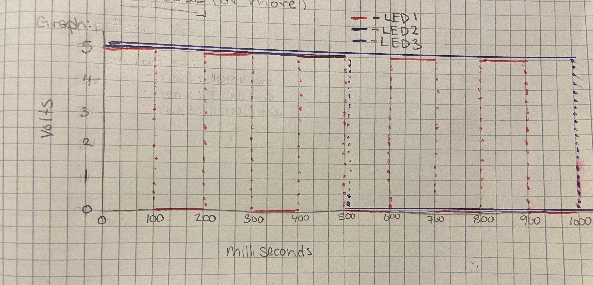

Mai Li's Assignment 2!
A1: Blink! Write up
A1: Blink! circuit photo
A1: Blink! Gif of circuit working!
Additional Questions:
1: Draw a graph where the X axis is time and the Y axis is voltage across the LEDs. Draw a
line for each of your 3 LEDs.

A1: Blink Graph showing the voltage changes through time as the program continues. For the first LED (red), it
turns on and off pretty frequently as shown in the graph. It turned on and off five times in the span of 1000ms or
one second. For the second LED (purple), it only turns on and off once in the span of one second, splitting the time
in half. As for the last LED (blue), it is never off for the first second because it's delay of the program (keeping it
on) is exactly one second or 1000ms!
2: How many LEDs could you blink independently with your Arduino? How much current would
that draw?
For the first question, this would depend on how many individual pins there are on the Arduino. To do more than pin
available would be possible by adding more LEDs to the circuits, but that wouldn't be an independently run LED anymore.
Looking at the controller, I could blink 14 different LEDs in the 0-13 numbered pins that are programmable.
As for the current, each LED is its own circuit that should have no more than 20mA going through it. So if I were
to use all 14 pins for 14 LEDs, all using 20mA or less, I would have about 20mA x 14 circuits = 280mA. Running all
14 pins, I should not exceed 280mA of current through the whole Arduino to keep it in a safe range.
3: How fast do you need to blink your LEDs until you no longer can tell that they are blinking?
This was experimented on in my playing around. I had tested how much time in milliseconds had to be on and off to not
notice a difference. I first tried 10 and then 15. I couldn't see a difference in 10, but I could in 15ms intervals.
However, I got confused and went up from 15 instead of down! I'm not sure how I got to that as the right way, but as I
got to blinks every 50ms, I realized I was noticing it more and more. After this, I tried the experiment again and started
from 15ms and decreased the time. It was around 12 or 11ms where I couldn't tell the difference exactly!